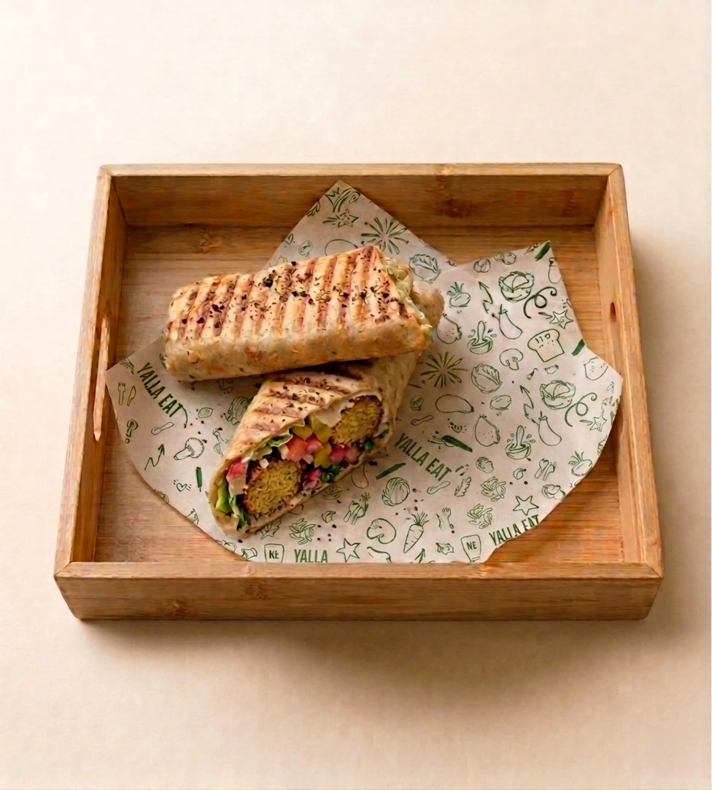
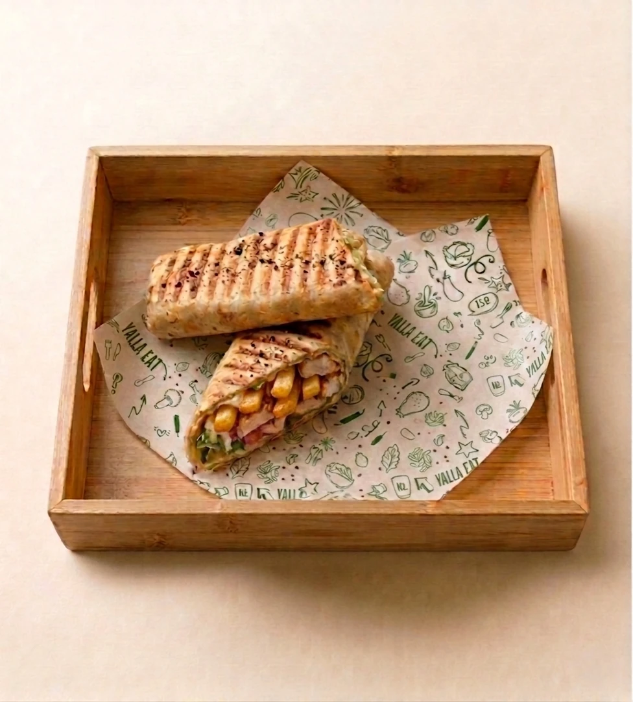
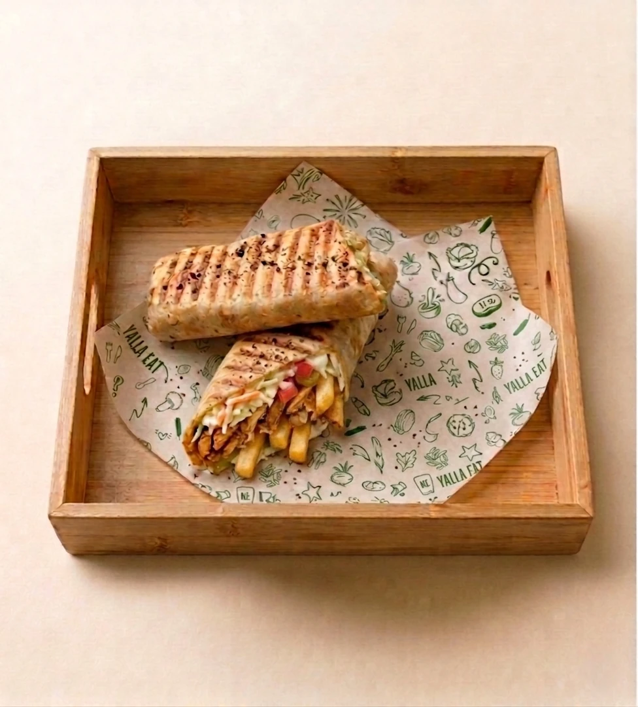
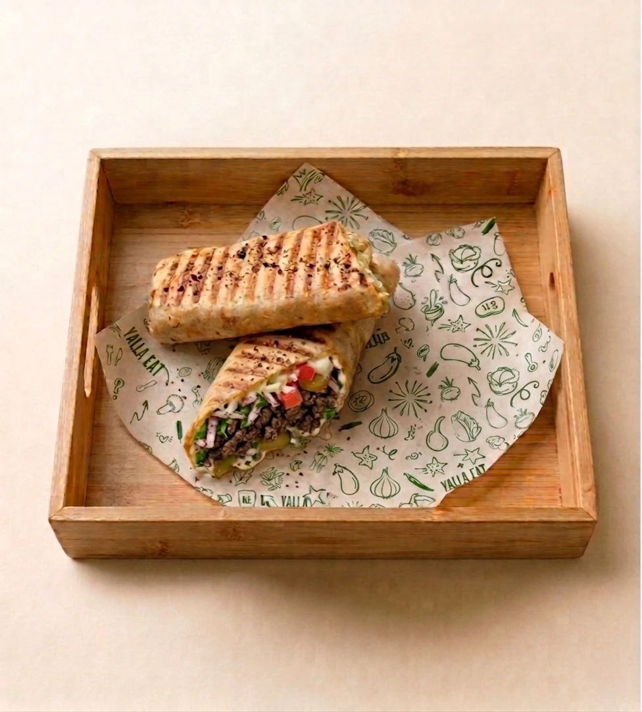

4 wraps libanais généreux, faits maison, à emporter dès 7,90€
Pain libanais frais, garnitures généreuses, sauces maison. Chaque wrap est préparé à la commande avec des ingrédients du jour.

🧆Falafels maison, houmous crémeux, salade fraîche, tomates, pickles, radis, sauce tarator à la crème de sésame. 100 % vegan.
7,90 €

🍗Poulet taouk grillé mariné au citron, chou croquant, patate sautée, tomates, pickles, crème à l'ail maison.
8,90 €

🌯Shawarma poulet tranché minute, chou, patate sautée, tomates, pickles, crème à l'ail généreuse.
8,90 €

🥩Bœuf grillé fondant, salade, tomates, pickles, oignon, persil frais, sauce tarator onctueuse à la crème de sésame.
9,90 €
Chez YallaEat, chaque wrap est un vrai repas complet, pas un snack vite fait.
Galette de pain libanais fraîche, moelleuse et généreuse. Préparée chaque jour pour un wrap qui a du goût dès la première bouchée. Rien à voir avec une tortilla industrielle.
Chaque wrap est rempli à ras bord. Pas de wrap à moitié vide ici : protéines, légumes frais, pickles, sauces — on ne lésine sur rien. Un vrai repas dans la main.
Crème à l'ail, tarator, tahini — toutes nos sauces sont préparées chaque jour avec des ingrédients frais. C'est ce qui fait la différence avec les sauces en tube.
Commandez sur commandes.yallaeat.fr et votre wrap est prêt en 10 minutes. Pas d'attente, pas de file. Idéal pour les salariés de Vaise pressés le midi.
Nos wraps se mangent facilement en marchant, au bureau ou sur un banc. Bien roulés, bien emballés, sans dégât. Le format parfait pour une pause déjeuner express à Lyon 9.
Entre 7,90€ et 9,90€ pour un wrap généreux fait maison avec des ingrédients frais — c'est le meilleur rapport qualité-prix de Lyon 9. Difficile de trouver mieux dans le quartier de Vaise.
Option vegan avec le wrap falafel à 7,90€. Toute notre carte est 100 % halal. Que vous soyez vegan, végétarien ou amateur de viande, il y a un wrap pour vous chez YallaEat.
Découvrez nos autres spécialités libanaises faites maison à Lyon 9.
Composez votre bowl sur mesure ou choisissez un bowl signature. Base, protéine, garnitures et sauces au choix.
Dès 9,90 € →
🥢Une sélection de mezzés libanais à partager entre collègues ou en famille : houmous, falafel, taboulé, kebbé et plus.
Dès 20,90 € →
📋Bowls, wraps, assiettes, mezzés, desserts et boissons. Toute notre carte libanaise faite maison à découvrir.
Voir le menu →
Nous proposons 4 wraps libanais faits maison : Wrap Falafel (7,90€), Wrap Taouk Poulet au Citron (8,90€), Wrap Shawarma Poulet (8,90€) et Wrap Shawarma Bœuf (9,90€). Tous servis dans un pain libanais frais avec des garnitures généreuses et des sauces maison.
Oui, notre wrap falafel est 100 % vegan. Il est composé de falafels maison, houmous, salade fraîche, tomates, pickles, radis et sauce tarator à la crème de sésame. Aucun produit animal.
Oui, tous nos wraps sont disponibles à emporter. Commandez sur commandes.yallaeat.fr et récupérez votre wrap prêt en 10 minutes au 29 Rue de Bourgogne, Lyon 9 (Vaise).
Oui, toute notre carte est 100 % halal. Nos viandes (poulet taouk, shawarma poulet, shawarma bœuf) proviennent de fournisseurs certifiés halal.